Blog
Launch notes and guides for keeping your money private.
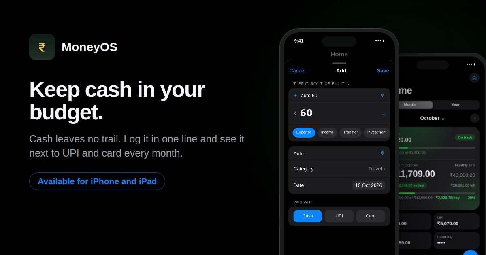
Guide · 16 October 2026
How to track cash expenses when everything else is UPI
Cash leaves no trail, so it slips out of your budget. How to log it in seconds and see it next to UPI and card each month.
Read the guide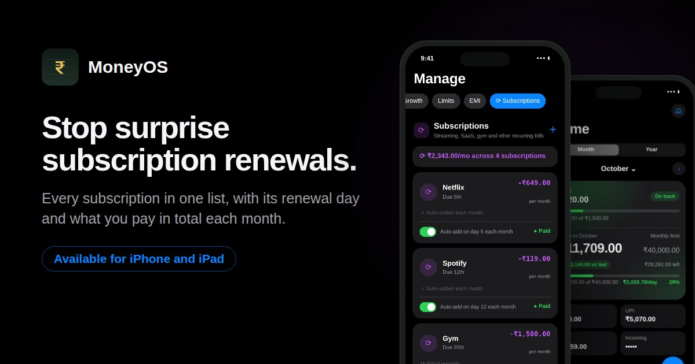
Guide · 15 October 2026
How to stop surprise subscription renewals
Every subscription in one list, with its renewal day and a monthly total. How to find them, track them and cancel the ones you no longer use.
Read the guide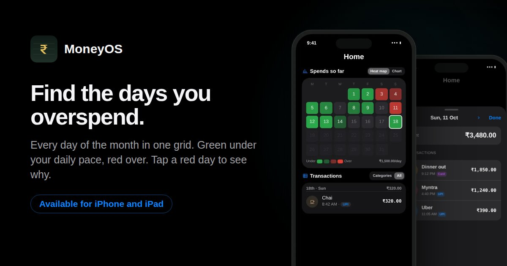
Guide · 14 October 2026
A spending heat map: find the days you overspend
Every day of the month in one grid, green under your daily pace and red over. Tap a red day to see where the money went.
Read the guide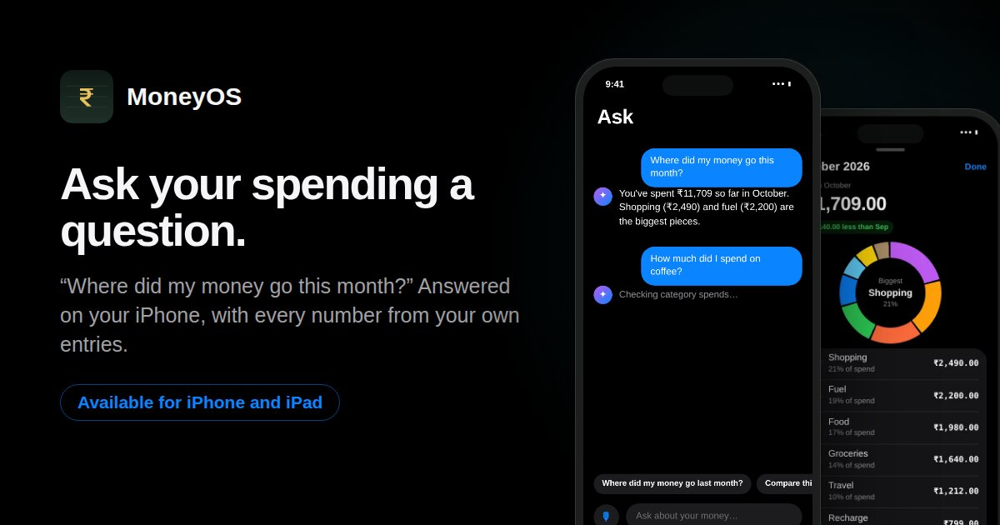
Guide · 13 October 2026
Ask your spending a question with on-device AI
Ask where your money went and get a plain answer on your iPhone. Your ledger does the maths, and nothing leaves the phone.
Read the guide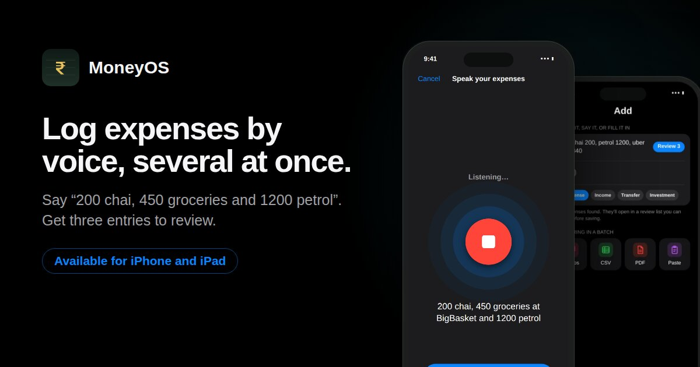
Guide · 12 October 2026
How to log expenses by voice, several at once
Say a whole day of spends in one sentence and get one entry for each, ready to check before saving.
Read the guide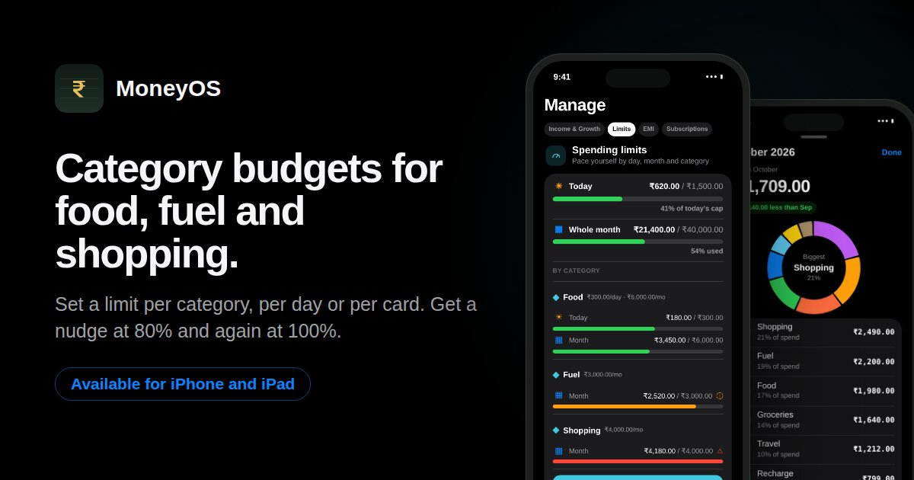
Guide · 11 October 2026
How to set category budgets for food, fuel and shopping
Give food, fuel and shopping their own limits, by month or by day, and get a nudge at 80% and again at 100%.
Read the guide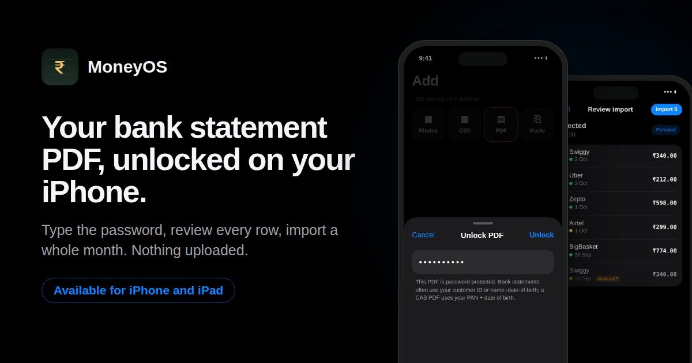
Guide · 10 October 2026
How to import a password-protected bank statement PDF
Unlock your statement PDF on your iPhone, review every row, and bring a whole month into your expense tracker in one go.
Read the guide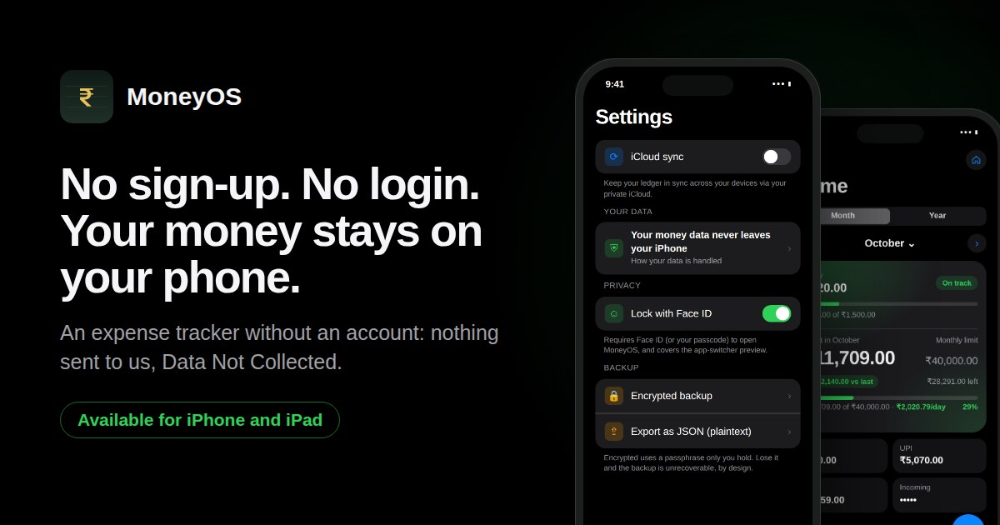
Guide · 9 October 2026
Expense tracker without login: why no-account apps are safer
What a no-account expense tracker protects, five things to check before you trust a money app, and the one trade-off to plan for.
Read the guide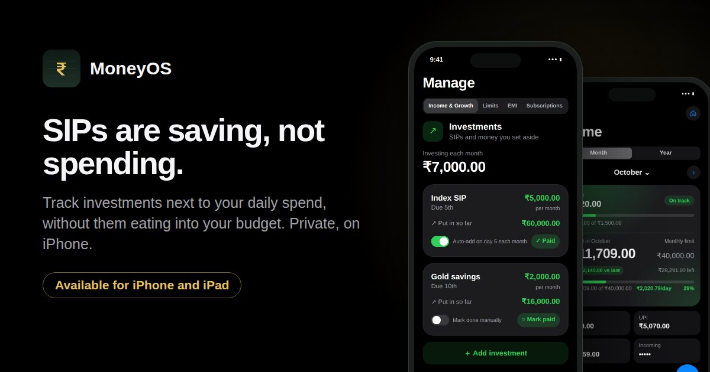
Guide · 8 October 2026
SIPs are not spending: tracking investments separately from expenses
Track SIPs next to your daily spending without them counting against your budget, and see your real savings rate.
Read the guide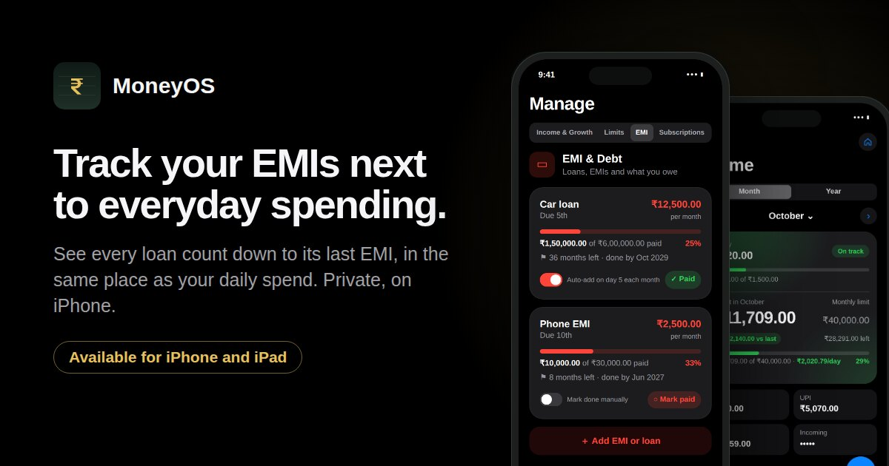
Guide · 7 October 2026
How to track EMIs alongside your daily expenses
List every loan, record each EMI as it goes out, and see each one count down to its last payment, right next to your everyday spending.
Read the guide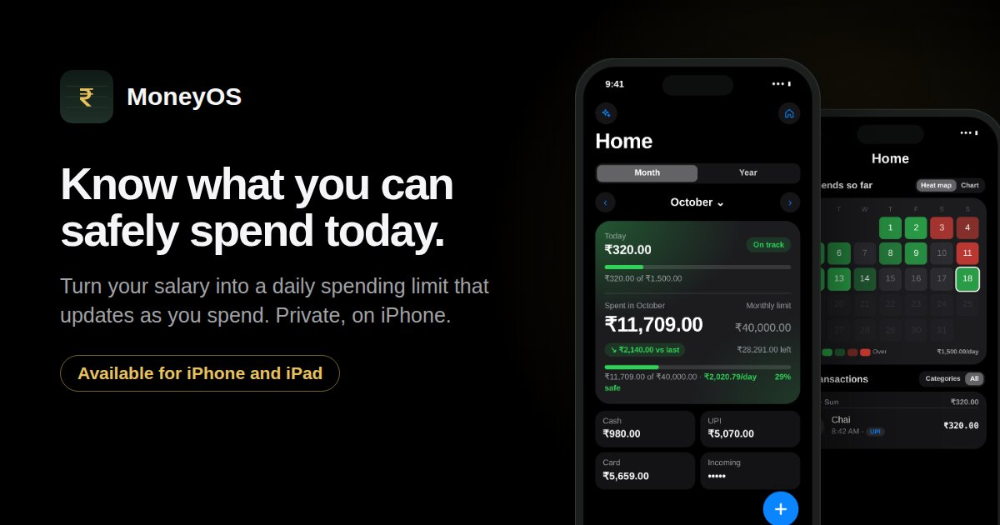
Guide · 6 October 2026
How to work out a safe daily spending limit from your salary
Four steps from take-home pay to one daily number, with a worked example and the formula that keeps it accurate as the month goes on.
Read the guide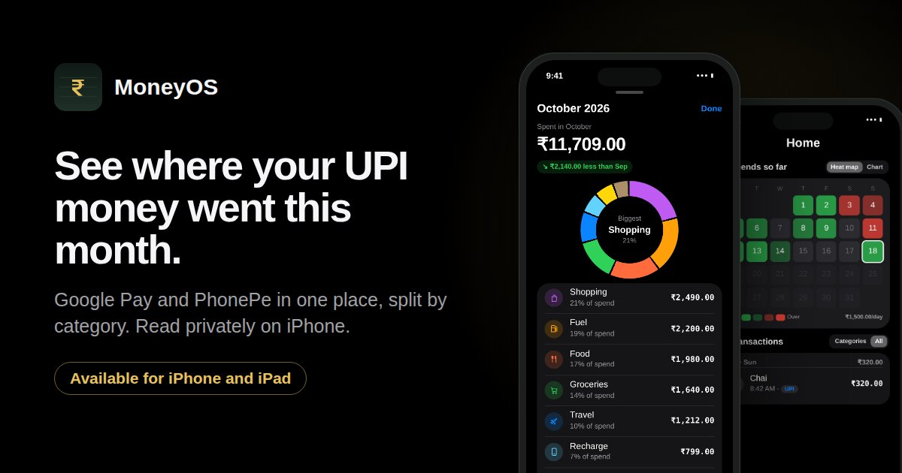
Guide · 5 October 2026
How to see where your Google Pay and PhonePe money went this month
Put every UPI payment in one place, split by category and compared with last month. A ten minute method that runs privately on your iPhone.
Read the guide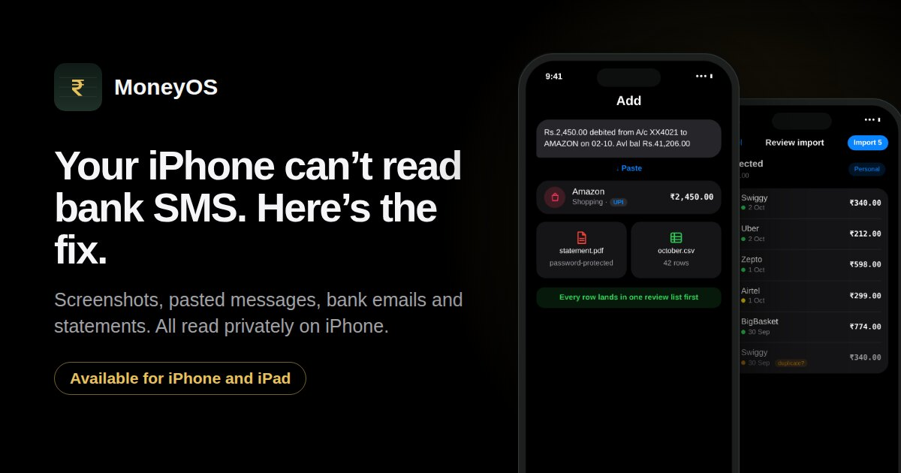
Guide · 4 October 2026
Why iPhone apps can’t read your bank SMS, and the fastest workaround
iOS does not let any app read your text messages. Here are four faster, more private ways to get every bank and UPI payment into your expense tracker on iPhone.
Read the guide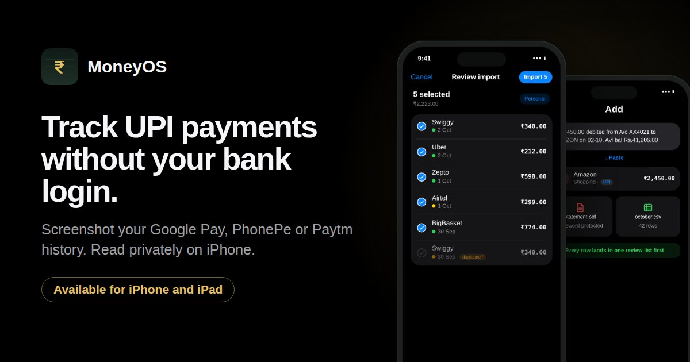
Guide · 3 October 2026
How to track UPI payments without giving an app your bank login
Screenshot your Google Pay, PhonePe or Paytm history and import every payment in a minute. Read privately on your iPhone, with no bank login and nothing uploaded.
Read the guide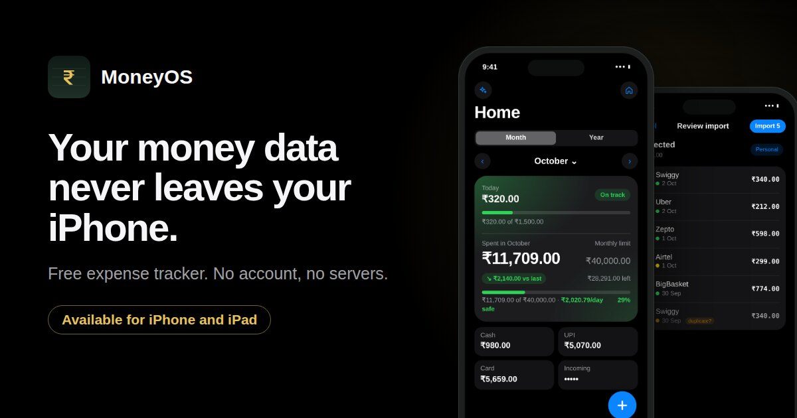
Launch · 3 October 2026
Meet MoneyOS: a private expense tracker for iPhone that never uploads your data
Say it, type it, screenshot your UPI history or import a statement. No account, no servers, and nothing is ever sent to us. Here is how it works and why we built it this way.
Read the post